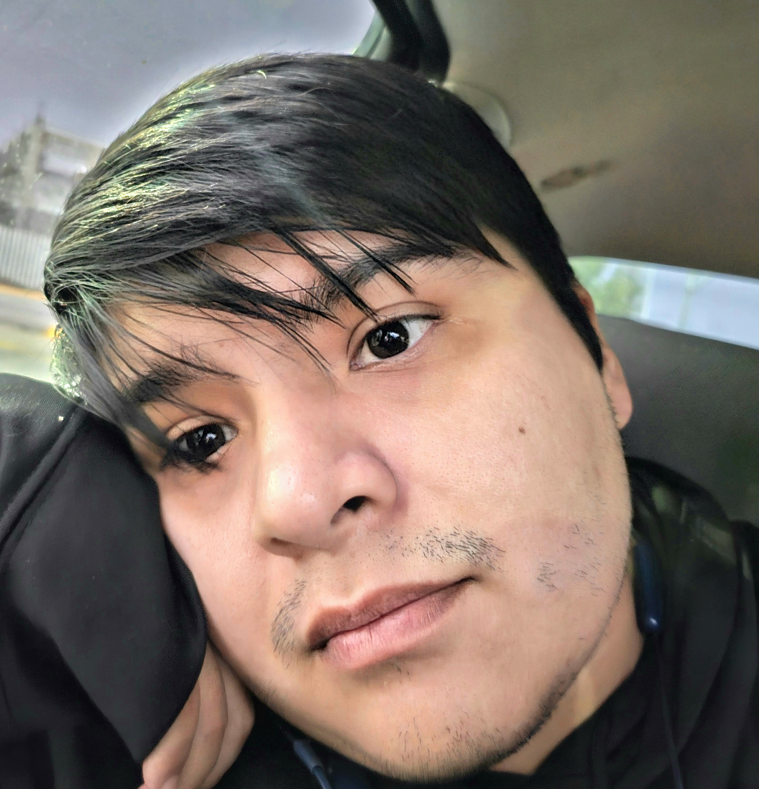

Larry Kevin Resendiz

Summary
I'm a hardworking individual who likes to learn new things with experience with working individually and in teams.
Education
Bachelor of Science in Psychology | Graduated May 2018 | University of Texas at Arlington
- Major: Psychology
- Minor: Psychology and Biology
Work Experience
-
Lowe’s Distribution Center, Mount Vernon, TX – Team Member
November 2018 – January 2019
- Work as part of a team, as well as independently receiving and handling products in a safe manner
-
Delivery and Moving Services Dos Naciones
January 2019 - March 2020
- Received and delivered packages across and outside of the country
- Scheduled receiving dates, package information, inventory, and client information
- Frequently answer phone calls and messages from clients to answer any questions or to schedule meetings
- Personally drive to clients to pick up any packages or give estimates
-
Amazon STX2/VTX2, Carrollton, TX - Process Assistant
September 2020 - Present Day
- Lead teams of 20+ associates to maintain workflow and achieve daily production goals
- Interacted with Area Managers to discuss daily goals and technical details
- Provided resources for Day 1 associates as well as veteran associates, including training to comply with standard operating procedures
- Worked on multiple site projects to further enhance productivity and promote safety
- Trained associates in a variety of different critical roles for outbound, inbound, ICQA, and dispatch departments
- Developed daily plans to increase building throughput
- Helped open new sites by training employees in standard operating procedures for Amazon to help maintain a network standard
Skills
-
Computer Skills
- Certified in multiple Microsoft Office 2013 programs (Word, Excel, PowerPoint)
- Experienced in multiple Microsoft Office 2016 programs
- Experienced with photo and video editing
- Experienced in keeping inventory and client information
- Experienced in navigation using various weather and road maps to find destinations and scheduling departures
- Used a variety of programs to find and trace back information on packages
Communication
- Bilingual, fluent in both Spanish and English
- Presented multiple research articles as well as lab findings
- Instructed many participants in research labs on proper methods to participate in labs
- Proposed game plans to Esports teammates
- Inform drivers of any potential updates on station procedures
Leadership
- Ran research labs for graduate students and professors, instructed volunteers on how to run participants through the present research
- Coached the UTA Esports’ Smash Bros. for Wii U collegiate team
- Scheduled and set various departure dates to a variety of destinations
- Train new hires to be able to perform their roles
Other